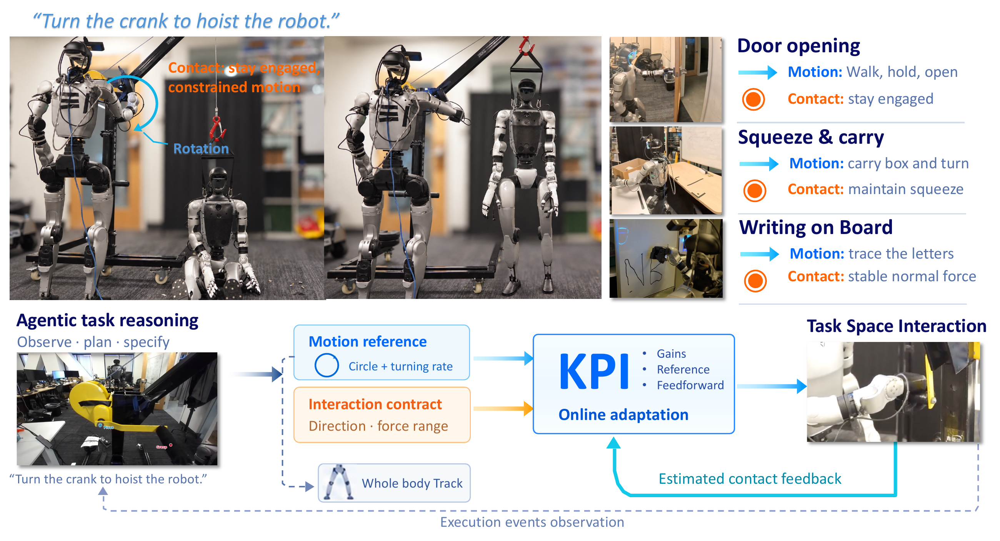
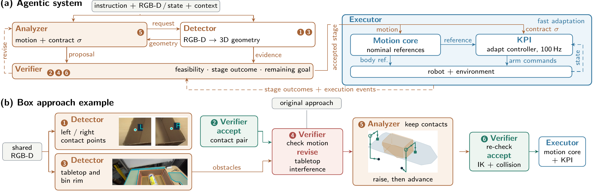
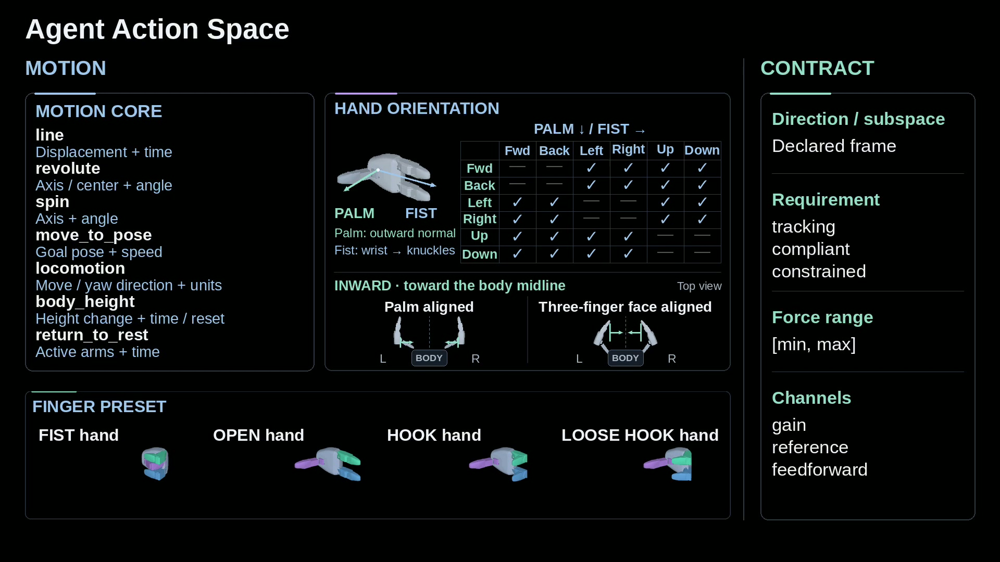
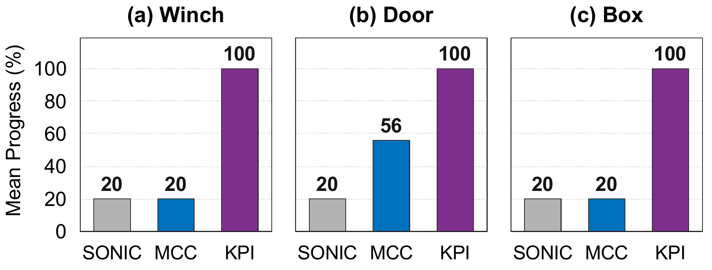

KPI
A Promptable Kernel for
Physical Interaction on Humanoids
Abstract
Humanoids now walk, balance and reach with remarkable generality. But a trajectory alone carries limited information about the interaction it should produce: at contact, the executing controller determines how the robot behaves. KPI is a promptable kernel between the trajectory source and an unmodified whole-body tracker. The commander supplies a nominal reference together with an interaction contract. From tracking error and an estimated wrench, KPI adapts stiffness, damping, reference and feedforward toward the contract at contact rate.
We demonstrate KPI through an agentic framework: from one instruction, a vision-language agent writes both the motion and the contract, without task-specific code. A humanoid operates a winch to hoist a second robot, opens a door and passes through, and transports a box. Additional evaluations examine load robustness, scripted board writing and teleoperated interaction during whole-body motion.
KPI: Contract-Driven Physical Interaction
The commander states the interaction objective. The kernel adapts the controller during contact.

The interaction contract
For each direction or subspace that requires a distinct response, the commander supplies four fields. This separates the physical objective from the controller parameters used to realize it.
- 01 Direction d
- A trajectory tangent, its normal subspace, a plane tangent or normal, or a direction in a declared frame.
- 02 Requirement o
- Tracking penalizes motion error; compliant favors low directional stiffness; constrained imposes force bounds without an added tracking or stiffness objective.
- 03 Force range [fmin, fmax]
- Lower and upper bounds apply to any requirement. Equal bounds specify a target force.
- 04 Channels c
- Select which parameters may change jointly: gain, reference, and feedforward.
Online adaptation at 100 Hz
Reference, pose, velocity and estimated wrench
Stiffness · damping · reference · feedforward
The next update uses the resulting contact state
The optimization balances tracking or compliance objectives with force bounds and a penalty on parameter changes. Only the selected channels can change. A force range can be unattainable at the current deflection; adaptation remains bounded by the controller’s limits.
Realization on a Humanoid Robot
On the Unitree G1, Cartesian impedance realizes the arm response at 500 Hz, using a sensorless wrench estimate refreshed at 200 Hz. Joint-local damping runs in the motor drivers; cross-joint terms remain on the host. SONIC controls the legs and waist, while KPI controls the arms. No wrist force sensor is added and the whole-body tracker is not retrained.
Agentic Execution
Task-level reasoning writes the reference and contract; physical feedback adapts their realization during each stage.

GPT-6 Astra implements Analyzer, Detector and Verifier. Each zero-shot agentic trial starts with one instruction, without task-specific code or a manually supplied contract. The system composes shared motion generators and uses a pretrained whole-body tracker.
Motion cores and the contract vocabulary

Experiments
Does the interface improve zero-shot execution, what does online adaptation contribute, and how does it extend across interactions?

All conditions share SONIC’s whole-body tracker. We compare its native arm control, MCC*, KPI with online adaptation, and KPI-fixed in adaptation studies. The arm interfaces differ: MCC* requests stiffnesses, whereas KPI requests interaction contracts; SONIC ignores the generated contract.
Winch Operation
Track along the handle’s tangent while limiting force in constrained directions.
Agentic execution. The agent selects circular motion and plans four clockwise revolutions to hoist another G1. Tangential tracking drives the turn, force bounds limit loading across the path, and the wrist remains compliant.
Tracking and compliant-control baselines. SONIC and MCC* grasp the handle but do not sustain a complete revolution in these selected trials. Excessive contact forces can move the body or break the grasp.
The contribution of online adaptation
KPI and KPI-fixed. When resistance slows the hand, KPI slows reference advancement and increases tangential stiffness. KPI-fixed lets the reference advance after the hand stalls; the tracking force becomes misaligned with the path until the hand reverses.
Door Opening and Passage
Use compliance to tolerate partially observed geometry and a hand reference that conflicts with the hinge constraint.
Agentic execution. Rotational tracking releases the latch. The agent then assigns compliance while combining a backward step with a hand reach. The robot opens the door further and passes through the doorway.
Interaction with a stiff mechanism. The native tracker-arm controller fails to unlatch in the shown trial. MCC* can unlatch, but oscillatory interaction makes pulling unreliable; it completes one of five passages in the reported evaluation.
Box Transport and Load Robustness
Maintain multipoint contact and inward forces while accommodating changes in relative hand–box pose.
Agentic transport and placement. The robot picks up a 0.85 kg box, turns, squats and places it on the destination table. The contract sustains the opposing contacts through posture changes. The full transport sequence uses the light box to limit heating.
Why contact maintenance matters. SONIC and MCC* fail to lift the box in the reported trials. The shown attempts illustrate loss of stable multipoint contact between the hands and the box sidewalls.
Force ranges under changing loads
Stationary lift-and-hold tests. Load mass and placement change the required response. KPI lifts 3 kg at near and middle positions, while both methods fail at 3 kg far. These tests are separate from the 0.85 kg transport sequence.
For medium and heavy loads, the agent chooses force ranges of 25–40 N and 35–50 N for KPI. For KPI-fixed, it chooses stiffnesses of 500 and 600 N/m; excessive forces trigger motor errors in failed trials. This task illustrates the paper’s motivation: an interaction objective remains meaningful as deflection changes, while a fixed gain produces a changing force.
Board Writing
A surface-normal force target supports contact while the pen follows a tangential path.
Scripted surface interaction. KPI and KPI-fixed both produce recognizable N and B shapes. KPI brings the mean estimated contact force closer to the target, with little visible change in the written pattern. The paper reports one writing execution per method.
Additional surface-interaction demonstration: wiping
Scripted wiping. An additional surface-contact demonstration from the source footage, shown at original speed.
Additional Tasks and Whole-Body Motions
The same interface also accepts human motion references. These demonstrations are teleoperated.
Drawer opening. KPI supports contact with an articulated mechanism during teleoperation. The supplementary video compares it with the native SONIC arm-control path.
Carrying during whole-body motion. Bimanual contact is maintained through locomotion, kneeling and standing. The montage retains the source’s comparison panels and playback-speed labels.
Supplementary
S1. Local Model and Parameter Update
All predictions are local to the current state and expressed in a consistent contact frame. We distinguish the immediate effect of a parameter update from the short-horizon motion response. Both follow from the impedance relation in Eq. (6), without identifying environmental stiffness. The approximation assumes slowly varying contact over the prediction interval; impacts and strongly inertial interaction are outside its scope.
Along direction i, let ri(ρ) be the conditioned reference, xi and vi the measured end-effector coordinate and velocity, ki and bi the controller stiffness and damping, and ui the feedforward component. Set ei,t = ri(ρt) − xi,t. Signed loads use the robot-on-environment convention, with external-wrench estimates converted accordingly. All coefficients below are evaluated at the current state.
For the immediate force prediction, we hold measured pose and velocity fixed. The first-order parameter-induced load increment is
Here , and the prescribed gain–damping relation is differentiated when forming the local update. Unselected channels have zero increments. The measured wrench anchors the prediction; it is not an optimization variable.
For the tracking objective, let zi(s) denote the incremental motion caused by the same parameter perturbation. We fix the prediction horizon at h = 10 ms, one adaptation period. Holding the current external load fixed over this horizon, a damping-dominated approximation gives
For a tracking direction with ki,t, bi,t > 0,
Thus gi depends only on the robot’s controller parameters and the prediction horizon, not on an estimated environmental compliance. The two errors in Eq. (5) are
Equation (S1) predicts an immediate load change, whereas (S2) supplies a short-horizon tracking surrogate; they are not simultaneous exact predictions of a future contact state. Fresh measurements replace both predictions at the next update. The corresponding matrix equations retain controller coupling, including both arms. Subspace bounds use the norm of the projected vector force prediction; rotations use local angular coordinates.
For the single-direction gain-only special case, reference and feedforward are fixed. Writing Δbi = βiΔki in the local linearization gives
A constrained specification adds no tracking or stiffness-preference objective. In this scalar local reduction, the positive-definite regularizer is a positive multiple of (k − ki,t)2, so the feasible solution is the stiffness closest to its current value. For ai ≠ 0,
This retains stiffness inside the force band and reaches the violated boundary when attainable. Otherwise, clipping gives the parameter endpoint with the smallest predicted violation: a bounded fallback, not satisfaction of the original hard constraint. If ai = 0, gain has no local force authority and stiffness is retained.
Full Supplementary Video
Paper
KPI: A Promptable Kernel for Physical Interaction on Humanoids